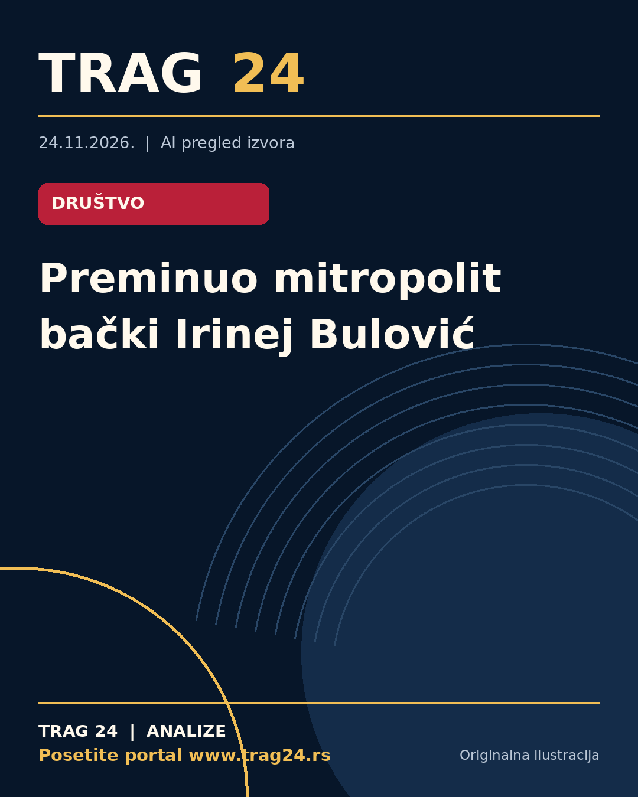

Preminuo mitropolit bački Irinej Bulović

ŠTA SE DOGODILO
Mitropolit bački Irinej Bulović preminuo je 24. novembra 2026. godine u 79. godini na Institutu za onkologiju Vojvodine u Sremskoj Kamenici. Tu vest je objavila Srpska pravoslavna crkva, navodeći da je preminuo na praznik svetog kralja Stefana Dečanskog.
HRONOLOGIJA
Irinej Bulović rođen je 11. februara 1947. godine u Stanišiću. Studirao je teologiju i doktorirao u Beogradu i Atini. Postao je episkop bački 1990. godine, a od 2024. godine nosio je titulu arhiepiskopa novosadskog i mitropolita bačkog. Tokom karijere bio je profesor na Bogoslovskom fakultetu, predavao Novi zavet, a od 2015. godine bio je u penziji. Bio je i portparol Svetog arhijerejskog sabora SPC od 2009. godine, te je imao ulogu u odnosu crkve i države. Pored srpske eparhije, od 2024. godine bio je i administrator Eparhije austrijske.
ŠTA NAVODE IZVORI
Svi izvori potvrđuju osnovne podatke o smrti i biografiji Irineja Bulovića. Srpska pravoslavna crkva u saopštenju ističe njegovu smrt i izražava poštovanje. Izvori detaljno opisuju njegovu crkvenu službu, akademsku karijeru i rad na unapređenju položaja crkve u društvu. Navodi se i da je bio jedan od uticajnih članova SPC, sa značajnim angažmanom u dijalogu i obrazovanju.
ŠTA JE POTVRĐENO
Potvrđeno je da je preminuo 24. novembra 2026. godine u Sremskoj Kamenici, da je bio mitropolit bački i arhiepiskop novosadski, te da je na čelu Eparhije bačke bio od 1990. godine. Takođe su potvrđene njegove obrazovne i službene funkcije, uključujući rad kao profesor i portparol SPC, kao i njegova uloga u crkvenim i državnim odnosima.
ŠTA NIJE POTVRĐENO
Nije potvrđeno da su postojeći izvori iznosili detalje o uzroku smrti ili druge privatne okolnosti vezane za njegovu smrt. Nema podataka o polemikama ili spornim momentima u vezi sa njegovim delovanjem.
ŠTA OSTАJE OTVORENO: Ostaje otvoreno kako će se dalje odvijati procesi u Eparhiji bačkoj nakon njegove smrti i ko će preuzeti njegove dužnosti. Takođe, ostaje nepoznato da li će biti organizovane specifične komemoracije ili liturgijske proslave u njegovu čast.
Izvori
- https://www.danas.rs/vesti/drustvo/preminuo-mitropolit-irinej-bulovic/
- https://www.nedeljnik.rs/preminuo-mitropolit-backi-irinej-bulovic/
- https://www.blic.rs/vesti/drustvo/ko-je-bio-mitropolit-backi-irinej-bulovic-jedan-je-od-najuticajnijih-ljudi-spc/pq3d03n
Ova analiza je pripremljena uz pomoć veštačke inteligencije na osnovu javno dostupnih izvora. Navodi izvora nisu nužno nezavisno potvrđeni.